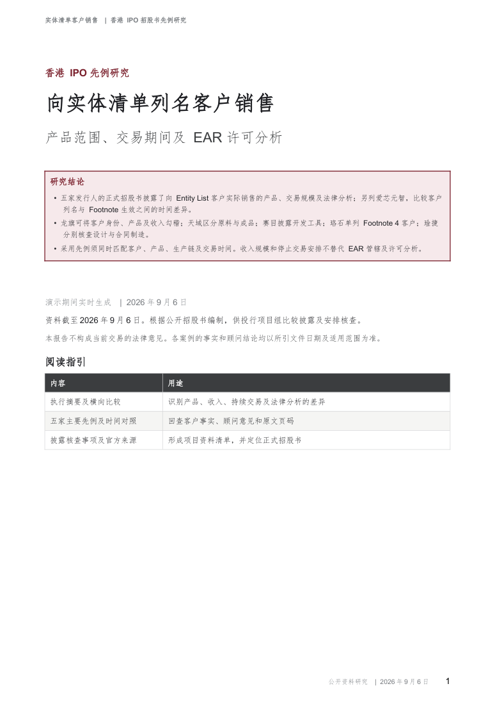

演示期间实时生成
向实体清单列名客户销售
香港 IPO 招股书先例研究
产品范围、交易期间及 EAR 许可分析
比较五家发行人的实际销售披露，另列爱芯元智的交易停止及 Footnote 生效时间对照。报告包括产品和收入、具名律师意见、披露安排、尽职调查事项及官方文件页码。

报告所列先例
| 发行人 | 销售产品或业务 | 主要比较事项 |
|---|---|---|
| 龙旗 09611 | ODM 产品 | 客户身份、产品表、收入与列名日勾稽 |
| 天域 02658 | SiC 外延晶圆 | 美国原产基底与中国原产成品分层分析 |
| 赛目 02571 | 仿真软件及服务 | 开发工具、FDP 分析及持续交易措施 |
| 珞石 03752 | 机器人产品 | Footnote 4 客户子集及制造过程确认 |
| 琻捷 06675 | Fabless 芯片 | 自身设计与合同制造分别核查 |
| 爱芯元智 00600 时间对照 | 芯片产品 | 客户列名、Footnote 生效与停止交易的先后关系 |
所引文件均为正式招股书，资料截至2026年9月6日。历史顾问意见应结合原文事实及限定条件阅读，不构成当前项目的法律意见。项目组及相关专业顾问须结合实际交易复核后采用。